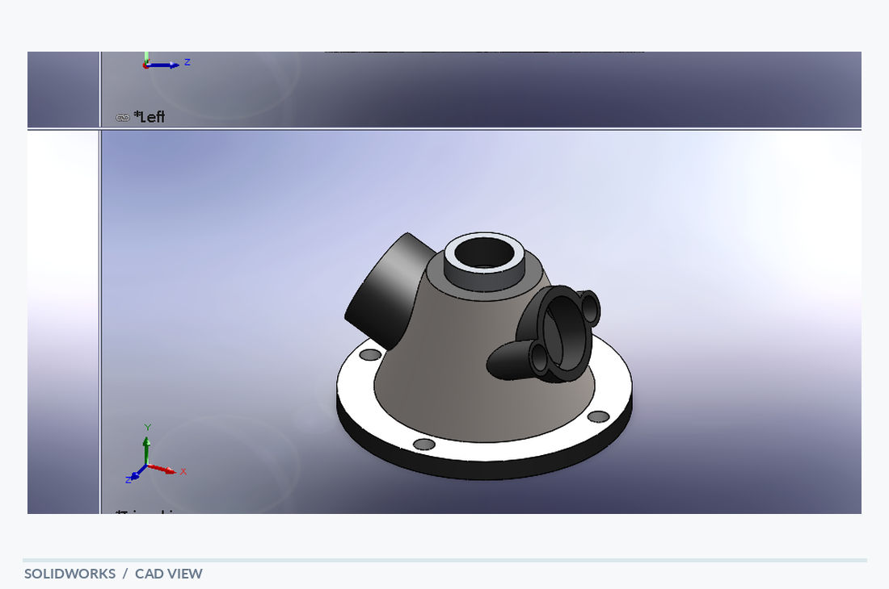

Fluid & Housing Concepts / SolidWorks
Multi-Port Valve
A multi-port valve body concept with a tapered main housing, inclined side connections and a mounting flange.


Design overview
The CAD model shows several cylindrical interfaces oriented around a central body, a top opening and a circular base with attachment features. It demonstrates the organization of intersecting features in a multi-directional housing.
Visible design features
- Tapered central body
- Multiple angled cylindrical ports
- Central opening and circular mounting flange
Modeling focus
Solid modeling of a complex housing with intersecting cylindrical features and arranged connection points.
A geometry study only; no sealing, flow performance or pressure rating is documented.